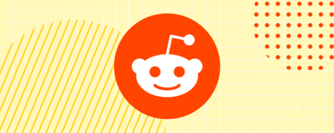
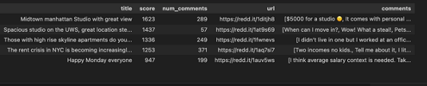
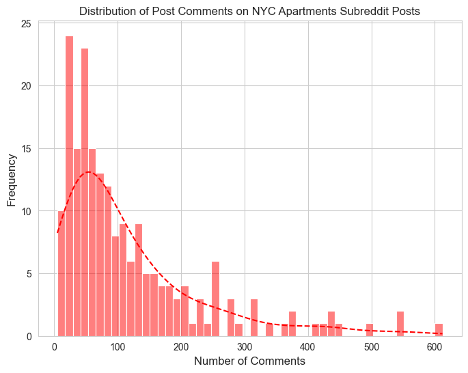
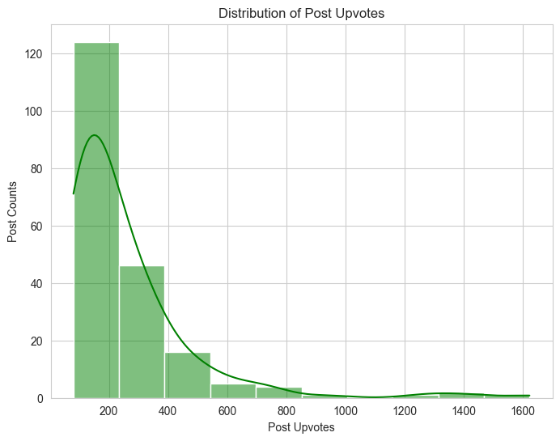

Reddit API data pull using PRAW

Project Overview
The goal of this project was to learn how to pull Reddit data using the python package PRAW. In particular, I am interested in learning how Reddit users are feeling about New York City Apartment Rentals. There is a subgroup called NYC Apartments and the goal is to pull user posts and comments.
✽ The full article can be found on my page on medium.com.
✽ The corresponding code to pull Reddit data using the API can be found in github.
✽ The corresponding code with data visualizations can be found in this notebook
Table of Contents
- Setting up Reddit API Access
- Filtering Top Posts from Last Week
- Extracting and Analyzing Post Data
- Data Exploration
- Next Steps
1. Setting up Reddit API Access
PRAW stands for Python Reddit API Wrapper and that's exactly what it is. Although I was a bit intimidated initially, using it turned out to be quite easy. To start, I had to create a Reddit App to create a client_id and client_secret - which I saved in a credential file. Simple enough, right?
After this, I had to install PRAW:
pip install praw
To establish a connection, use the credentials from your Reddit app:
# Connect to Reddit API using PRAW
reddit = praw.Reddit(
client_id=client_id,
client_secret=client_secret,
password=client_password,
user_agent=user_agent,
username=user_name,
)
And that's it! On to pulling data! As I mentioned, I am interested in the NYC Apartment subreddit. It is called 'NYCapartments'. To pull data, I have to create an instance:
# Create an instance of NYCapartments subreddit
sub_reddit = reddit.subreddit("NYCapartments")
2. Filtering Top Posts from Last Week
With PRAW, we can easily grab posts by week, month or year. In this example, I wanted to just grab the top 5 posts from the past week to understand how the data is returned. The below code returns the post title, upvotes (score) and comments.
# Get the top 5 posts from the past week
weekly_posts = sub_reddit.top(time_filter='week', limit=5)
# Print post titles, scores and comments
for post in weekly_posts:
print(f'Post title: {post.title}')
print(f'Post upvotes: {post.score}')
print(f'Post comments: {post.comments}')
print()
Here is what a sample output looks like:
Post title: Looking for roommates to fill $1667 rooms in Park Slope
Post upvotes: 279
Post comments: <praw.models.comment_forest.CommentForest object at 0x28d081790>
Post title: Age discrimination in NYC rentals?
Post upvotes: 113
Post comments: <praw.models.comment_forest.CommentForest object at 0x28d1f4d90>
3. Extracting and Analyzing Post Data
Interestingly, post.comments returns an object called comment_forest. In order to see the actual comments, we need to further process this, but it's not too difficult. To do this, I created a list to store all comments and iterated through the comments. For each post, I created a post dictionary with the comments:
# Pull posts from last year NYCapartments subreddit
post_list = []
for post in subrreddit:
post_dict = {}
post_comments = []
# Retrieve full comments, including nested ones
post.comments.replace_more(limit=None)
for top_level_comment in post.comments:
post_comments.append(top_level_comment.body)
post_dict['comments'] = post_comments
post_list.append(post_dict)
result_df = pd.DataFrame(post_list)
Note the use of replace_more to retrieve all comments, including nested ones. This ensures you don’t miss out on any key discussion points. You can find the documentation here.
4. Data Exploration
After pulling the data from subreddit, we can start asking meaningful questions and perform data analysis. But first, here is a quick look at the data:

How much engagement do posts typically receive?
By examining the distribution of comments, we see that the majority of posts get fewer than 100 comments:

What’s the typical upvote range for posts?
Most posts fall within the range of 150 to 300 upvotes, showing moderate interest from the subreddit. However, there are occasional outliers with over 600 upvotes, indicating viral content that grabs more widespread attention:

5. Next Steps
Once I have extracted Reddit posts and comments, the next step in this project is to use pre-trained models on Hugging Face’s Twitter-RoBERTa-base model for sentiment analysis. This analysis will provide a deeper layer of insight, complementing the engagement data, and helping us understand not only how much users are interacting but also the emotional context behind their conversations. Lastly, the 3rd part of this project will be to use OpenAI to summarize posts and comments.